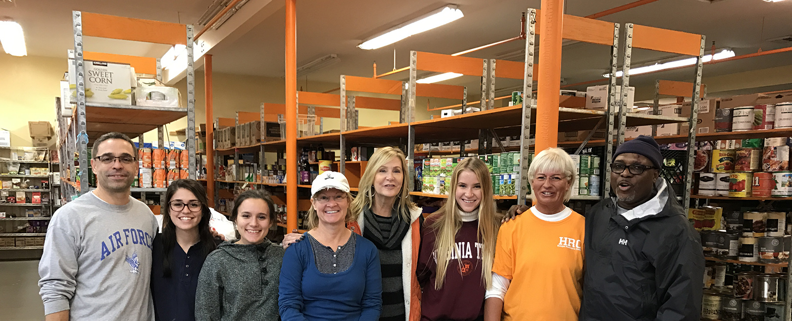

Hunger Resource Center
FOOD ASSISTANCE
NVFS’ Hunger Resource Center (HRC, or Centro de Recursos para Prevenir el Hambre) at our SERVE Campus provides nearly 600 Prince William County families every month with:
- Emergency food assistance
- Nutrition information
- Strategies for buying healthy food on a budget
Did You Know? The HRC can purchase food from the Capital Area Food Bank for a flat fee of $0.19 per pound, meaning that $100 can buy more than 500 pounds of food.
The Hunger Resource Center helps families in Prince William County and the cities of Manassas and Manassas Park. Many of our clients are forced to choose between putting food on the table or paying their household bills. The HRC helps families avoid this difficult choice — and stave off the perils of homelessness.

Contact
10058 Dean Dr.Manassas, VA 20110Food Assistance
571.748.2680
Darrell Dixon
Warehouse Manager
571.748.2602
Navara Cannon
Community Engagement / Volunteer Specialist
571.748.2536